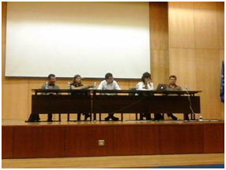

Sim ou não: Rendimento Básico Incondicional
Rendimento Básico Incondicional em discussão na UBI.
Vários investigadores e sindicalistas estiveram juntos na UBI para discutir o tema do Rendimento Básico Incondicional. Este é uma prestação atribuída a cada cidadão independentemente da sua situação financeira, familiar ou profissional, e suficiente para permitir uma vida com dignidade”. O RBI pretende-se Universal, Incondicional, Individual e Suficiente para viver com dignidade.
Os especialistas reunidos discutiram o conceito e as consequências possíveis do estabelecimento de uma prestação desse género. Uma das questões mais importantes debatidas no passado dia sete de maio foi a falta de campanhas por um trabalho ativo, como referiu a investigadora de história contemporânea da Universidade Nova de Lisboa, Raquel Varela.
Numa posição clara contra o Rendimento Básico Incondicional, a investigadora expõe que ao defendermos “esta ideia generosa, onde o pobre e o rico têm acesso a todos os bens de forma igual”, podemos estar a contribuir para uma “mercantilização do estado social”, explica Raquel Varela.
Por outro lado, há quem defenda este tipo de rendimento e veja nele uma solução para a pobreza. Para os que afirmam que este rendimento é uma exploração para com as pessoas que trabalham, o investigador do Grupo de Teoria Política do Centro de Estudos Humanísticos da Universidade do Minho, Roberto Merril, explica: “Este rendimento permite àqueles que não querem trabalhar, darem oportunidade àqueles aqueles que querem”.
Para a UGT (União Geral de Trabalhadores) a primazia é o emprego, focando todas as questões no “combate ao desemprego, e não em formas alternativas das pessoas manterem a sua sobrevivência, ou mesmo o seu bem-estar”, até porque para a central sindical, “o emprego dignifica o ser humano”, explica a secretária executiva da UGT, Catarina Albergaria.
Com uma palestra reduzida mas ainda assim participava, Raquel Varela confessa que este tipo de discussão é importante, até porque “o que hoje aqui está a ser feito é raríssimo no mundo académico e político”.
publicado em: quarta-feira, 14 de Maio de 2014